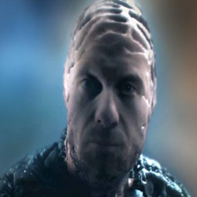

| Home | The Doctors | The Companions | The Villains |
|
|||
| cf
The BonelessThe Boneless are aliens from beyond the known universe who have the ability to reduce three-dimensional things, including humans, to two-dimensional entities, barely distinguishable from paintings and murals. We don’t know how many victims the Boneless claimed but the Doctor worked out why they were killing: ‘They are experimenting, they are testing, they are dissecting, trying to understand us, trying to understand three dimensions.’ Their effect on the TARDIS was dramatic, shrinking its exterior dimensions to the extent that the Doctor could not emerge from his own time machine. They were powerful enough to bleed the ship’s energy supply meaning the Doctor was no longer safe in his own home… And so whereas the Time Lord would normally have faced them ‘on the ground’, it was left to Clara – jokingly calling herself the Doctor – and Rigsy, to fight these ruthless aliens. Clara tricked the Boneless into repowering the TARDIS, allowing it to return to its normal size. The Doctor was therefore freed and emerged to confront the invaders. He had tried to reason with the Boneless but they had responded with violence and continued carnage. The time for more drastic action had arrived. ‘I think that you understand us perfectly,’ he told them. ‘I think that you just don’t care. And I don’t know whether you are here to invade, infiltrate or just replace us. I don’t suppose it really matters now… I’m sending you back to your own dimension. Who knows: some of you may even survive the trip. And if you do, remember this: you are not welcome here! This plane is protected!’ The Doctor was able to banish the Boneless but they were not destroyed and could in theory return to Earth… Much about these strange, terrible aliens remains a mystery but one thing is certain – if they touch you, you’re finished!
|